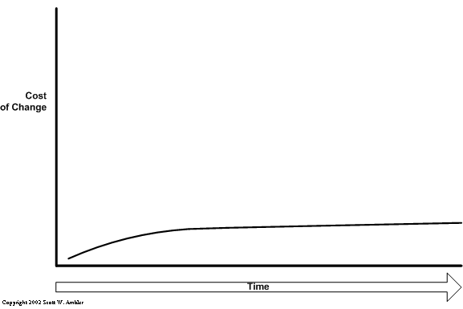

Design Patterns
Leandro Rodrigo Saad Cruz
leandro@scrum.com.br
The Chaos Report
- 31.1% dos projetos serão cancelados antes de sua conclusão
- $81 bi em projetos cancelados + $59 bi para completar projetos atrasados (EUA/1995).
- 52.7% dos projetos irão custar aproximadamente o dobro da sua estimativa inicial
- 16.2% on-time e on-budget (preço e prazo esperados)
- 32% de sucesso (em 2009)

Sintomas
- Falta de entendimento das necessidades do usuário
- Incompetência para gerenciar mudanças em requisitos
- Módulos incompatíveis
- Dificuldade de manter e extender o Software
- Descoberta tardia de problemas graves no Projeto
- Baixa qualidade do Software
- Performance inaceitável do sistema
- Ausência de um processo confiável de build/release
Causas
- Gerenciamento de requisitos inadequado
- Comunicação ambígua e imprecisa
- Arquiteturas frágeis
- Inconsistências no gerenciamento de requisitos, projeto e implementação
- Testes insuficientes
- Avaliação subjetiva do estatus do projeto
- Falha ao atacar os riscos
- Propagação descontrolada das mudanças
- Automação insuficiente
- Complexidade esmagadora
Complexidade

Motivos
- Flexibilidade
- Sistema Discreto (não contínuo)
- Invisível (sem abstrações geométricas)
Gerência da Complexidade
- Paradigma OO
- Metodologias e Processos
Design Patterns
Design patterns are solutions to software design problems you find again and again in real-world application development. Patterns are about reusable designs and interactions of objects.
Processo de Apodrecimento do Software

"Talk is cheap. Show me the code" - Linus Torvalds
CopyCharacters
byte[] buffer = new byte[SIZE];
int count;
while((count = System.in.read(buffer)) != -1) {
String input = new String(buffer);
if(input.trim().equals("q")) {
System.out.println("Bye!");
return;
}
System.out.println(input.trim());
Arrays.fill(buffer, (byte) 0);
}
CopyCharactersToStderr
private static final boolean useStderr = true;
/* ... */
while((count = System.in.read(buffer)) != -1) {
String input = new String(buffer);
if(input.trim().equals("q")) {
if(useStderr)
System.err.println("Bye!");
else
System.out.println("Bye!");
return;
}
if(useStderr)
System.err.println(input.trim());
else
System.out.println(input.trim());
/* ... */
}
CopyCharactersFromFileToStderr
private static final boolean useStderr = true;
private static final boolean copyFromFile = true;
/* ... */
byte[] buffer = new byte[SIZE];
int count;
InputStream is = null;
if(copyFromFile)
is = new FileInputStream(new File("/tmp/file.txt"));
while((count = copyFromFile ? is.read(buffer) : System.in.read(buffer)) != -1) {
String input = new String(buffer);
if(input.trim().equals("q")) {
if(useStderr)
System.err.println("Bye!");
else
System.out.println("Bye!");
return;
}
if(useStderr)
System.err.println(input.trim());
else
System.out.println(input.trim());
/* ... */
}
What's next?

Reader
public interface Reader
{
int read(byte[] buffer)
throws IOException;
}
Writer
public interface Writer
{
void writeln(String s);
}
CopyCharactersRefactored
private static final int SIZE = 100;
public static void main(String[] args)
throws Exception
{
Reader reader = null; // Could be any reader
Writer writer = null; // Could be any writer
byte[] buffer = new byte[SIZE];
int count;
while((count = reader.read(buffer)) != -1)
{
String input = new String(buffer);
if(input.trim().equals("q"))
{
writer.writeln("Bye!");
return;
}
writer.writeln(input.trim());
Arrays.fill(buffer, (byte) 0);
}
}Technical Debt
A series of bad decisions
Technical Debt - The Monster in Your ClosetVelocidade

Atraso

Gambiarra

Dívida Não Paga

Velocidade 2

Morte Lenta e Dolorosa
Software Cost Curve

Software Cost Curve
Software Engineering Body of Knowledge
- Padrões de Arquitetura
- Padrões de Projeto
- Padrões de Protocolos
- Padrões de Design
- Refactoring
- Testes
- Continuous Delivery
Design patterns are solutions to software design problems you find again and again in real-world application development. Patterns are about reusable designs and interactions of objects.
Creational Patterns
- Abstract Factory
- Builder
- Factory Method
- Prototype
- Singleton
Structural Patterns
- Adapter
- Bridge
- Composite
- Decorator
- Facade
- Flyweight
- Proxy
Behavioral Patterns
- Chain of Responsibility
- Command
- Interpreter
- Iterator
- Mediator
- Memento
- Observer
- State
- Strategy
- Template Method
- Visitor
Abstract Factory
Provide an interface for creating families of related or dependent objects without specifying their concrete classes.

Builder
Separate the construction of a complex object from its representation so that the same construction process can create different representations.

Factory Method
Define an interface for creating an object, but let subclasses decide which class to instantiate. Factory Method lets a class defer instantiation to subclasses.

Singleton
Ensure a class has only one instance and provide a global point of access to it.

Adapter
Convert the interface of a class into another interface clients expect. Adapter lets classes work together that couldn't otherwise because of incompatible interfaces.

Bridge
Decouple an abstraction from its implementation so that the two can vary independently.

Composite
Compose objects into tree structures to represent part-whole hierarchies. Composite lets clients treat individual objects and compositions of objects uniformly.

Decorator
Attach additional responsibilities to an object dynamically. Decorators provide a flexible alternative to subclassing for extending functionality.

Facade
Provide a unified interface to a set of interfaces in a subsystem. Façade defines a higher-level interface that makes the subsystem easier to use.

Flyweight
Use sharing to support large numbers of fine-grained objects efficiently.

Proxy
Provide a surrogate or placeholder for another object to control access to it.

Chain of Responsibility
Avoid coupling the sender of a request to its receiver by giving more than one object a chance to handle the request. Chain the receiving objects and pass the request along the chain until an object handles it.

Command
Encapsulate a request as an object, thereby letting you parameterize clients with different requests, queue or log requests, and support undoable operations.

Iterator
Provide a way to access the elements of an aggregate object sequentially without exposing its underlying representation.

Observer
Define a one-to-many dependency between objects so that when one object changes state, all its dependents are notified and updated automatically.

State
Allow an object to alter its behavior when its internal state changes. The object will appear to change its class.

Strategy
Define a family of algorithms, encapsulate each one, and make them interchangeable. Strategy lets the algorithm vary independently from clients that use it.

Template Method
Define the skeleton of an algorithm in an operation, deferring some steps to subclasses. Template Method lets subclasses redefine certain steps of an algorithm without changing the algorithm's structure.

Visitor
Represent an operation to be performed on the elements of an object structure. Visitor lets you define a new operation without changing the classes of the elements on which it operates.